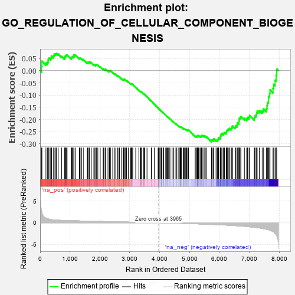

| | | Dataset | 7d |
| Phenotype | NoPhenotypeAvailable |
| Upregulated in class | na_neg |
| GeneSet | GO_REGULATION_OF_CELLULAR_COMPONENT_BIOGENESIS |
| Enrichment Score (ES) | -0.29186198 |
| Normalized Enrichment Score (NES) | -1.0116214 |
| Nominal p-value | 0.4770355 |
| FDR q-value | 0.8587553 |
| FWER p-Value | 1.0 |
Table: GSEA Results Summary

Fig 1: Enrichment plot: GO_REGULATION_OF_CELLULAR_COMPONENT_BIOGENESIS
Profile of the Running ES Score & Positions of GeneSet Members on the Rank Ordered List
| PROBE | GENE SYMBOL | GENE_TITLE | RANK IN GENE LIST | RANK METRIC SCORE | RUNNING ES | CORE ENRICHMENT | | 1 | TGFB3 | | | 49 | 2.654 | 0.0182 | No |
| 2 | RAC2 | | | 60 | 2.442 | 0.0394 | No |
| 3 | TPPP3 | | | 195 | 1.079 | 0.0321 | No |
| 4 | INSM1 | | | 250 | 0.939 | 0.0338 | No |
| 5 | TBX20 | | | 267 | 0.880 | 0.0398 | No |
| 6 | ULK1 | | | 272 | 0.875 | 0.0474 | No |
| 7 | FSCN1 | | | 297 | 0.830 | 0.0520 | No |
| 8 | TAPT1 | | | 354 | 0.743 | 0.0516 | No |
| 9 | PLD1 | | | 381 | 0.716 | 0.0548 | No |
| 10 | BAX | | | 387 | 0.711 | 0.0608 | No |
| 11 | ERCC1 | | | 453 | 0.660 | 0.0585 | No |
| 12 | CNOT6 | | | 462 | 0.655 | 0.0635 | No |
| 13 | LRP1 | | | 470 | 0.648 | 0.0686 | No |
| 14 | CNOT2 | | | 514 | 0.625 | 0.0688 | No |
| 15 | SRF | | | 542 | 0.615 | 0.0710 | No |
| 16 | DHX33 | | | 605 | 0.593 | 0.0684 | No |
| 17 | ID1 | | | 719 | 0.555 | 0.0590 | No |
| 18 | RPA1 | | | 817 | 0.527 | 0.0513 | No |
| 19 | LDB2 | | | 831 | 0.523 | 0.0545 | No |
| 20 | SAMD8 | | | 836 | 0.522 | 0.0588 | No |
| 21 | RPA2 | | | 851 | 0.519 | 0.0618 | No |
| 22 | WDR75 | | | 874 | 0.513 | 0.0636 | No |
| 23 | HCFC1 | | | 902 | 0.506 | 0.0648 | No |
| 24 | RCC1 | | | 1043 | 0.475 | 0.0511 | No |
| 25 | MEF2C | | | 1054 | 0.473 | 0.0542 | No |
| 26 | XPA | | | 1070 | 0.469 | 0.0566 | No |
| 27 | CDK10 | | | 1092 | 0.465 | 0.0582 | No |
| 28 | SRC | | | 1128 | 0.459 | 0.0579 | No |
| 29 | NCK2 | | | 1131 | 0.458 | 0.0619 | No |
| 30 | UTP15 | | | 1135 | 0.457 | 0.0657 | No |
| 31 | ERCC3 | | | 1173 | 0.451 | 0.0651 | No |
| 32 | PEX5 | | | 1313 | 0.427 | 0.0511 | No |
| 33 | TBCD | | | 1338 | 0.422 | 0.0519 | No |
| 34 | FKBP4 | | | 1390 | 0.412 | 0.0491 | No |
| 35 | RBX1 | | | 1445 | 0.401 | 0.0458 | No |
| 36 | FZD1 | | | 1574 | 0.379 | 0.0328 | No |
| 37 | NPRL3 | | | 1592 | 0.375 | 0.0341 | No |
| 38 | DRG1 | | | 1633 | 0.368 | 0.0323 | No |
| 39 | DDB1 | | | 1642 | 0.366 | 0.0347 | No |
| 40 | TPPP | | | 1646 | 0.365 | 0.0377 | No |
| 41 | ERCC2 | | | 1712 | 0.354 | 0.0325 | No |
| 42 | FNIP1 | | | 1798 | 0.338 | 0.0247 | No |
| 43 | FMR1 | | | 1816 | 0.334 | 0.0256 | No |
| 44 | SMAD4 | | | 1860 | 0.326 | 0.0230 | No |
| 45 | NUP62 | | | 1871 | 0.324 | 0.0247 | No |
| 46 | PAK3 | | | 1889 | 0.322 | 0.0255 | No |
| 47 | TASOR | | | 1931 | 0.316 | 0.0231 | No |
| 48 | RAF1 | | | 2011 | 0.303 | 0.0157 | No |
| 49 | BMP7 | | | 2107 | 0.290 | 0.0061 | No |
| 50 | SNF8 | | | 2119 | 0.288 | 0.0074 | No |
| 51 | MORC2 | | | 2171 | 0.281 | 0.0034 | No |
| 52 | NPRL2 | | | 2184 | 0.278 | 0.0044 | No |
| 53 | SYK | | | 2186 | 0.278 | 0.0068 | No |
| 54 | CREB1 | | | 2243 | 0.269 | 0.0021 | No |
| 55 | WASF1 | | | 2303 | 0.259 | -0.0031 | No |
| 56 | REST | | | 2308 | 0.259 | -0.0013 | No |
| 57 | MED25 | | | 2320 | 0.257 | -0.0003 | No |
| 58 | FAF1 | | | 2340 | 0.255 | -0.0004 | No |
| 59 | BCAS3 | | | 2352 | 0.253 | 0.0005 | No |
| 60 | MET | | | 2430 | 0.240 | -0.0072 | No |
| 61 | KAT2B | | | 2502 | 0.226 | -0.0143 | No |
| 62 | CDT1 | | | 2505 | 0.226 | -0.0125 | No |
| 63 | RIOK1 | | | 2586 | 0.215 | -0.0208 | No |
| 64 | MPP7 | | | 2606 | 0.211 | -0.0213 | No |
| 65 | VPS4A | | | 2654 | 0.205 | -0.0255 | No |
| 66 | SLIT2 | | | 2724 | 0.195 | -0.0326 | No |
| 67 | RIOK2 | | | 2775 | 0.187 | -0.0373 | No |
| 68 | SCFD1 | | | 2783 | 0.185 | -0.0365 | No |
| 69 | ATR | | | 2800 | 0.183 | -0.0369 | No |
| 70 | FER | | | 2803 | 0.183 | -0.0355 | No |
| 71 | BRK1 | | | 2805 | 0.183 | -0.0339 | No |
| 72 | CAND1 | | | 2845 | 0.177 | -0.0373 | No |
| 73 | DAPK3 | | | 2880 | 0.169 | -0.0401 | No |
| 74 | MTM1 | | | 2893 | 0.168 | -0.0401 | No |
| 75 | RAB17 | | | 2950 | 0.157 | -0.0459 | No |
| 76 | RTEL1 | | | 3010 | 0.148 | -0.0522 | No |
| 77 | WNT4 | | | 3023 | 0.146 | -0.0524 | No |
| 78 | PAN3 | | | 3054 | 0.142 | -0.0549 | No |
| 79 | FEZ1 | | | 3055 | 0.142 | -0.0536 | No |
| 80 | MAP2 | | | 3074 | 0.140 | -0.0546 | No |
| 81 | CUL4A | | | 3097 | 0.137 | -0.0562 | No |
| 82 | TWF1 | | | 3199 | 0.123 | -0.0681 | No |
| 83 | SMAD3 | | | 3303 | 0.105 | -0.0804 | No |
| 84 | NCLN | | | 3353 | 0.096 | -0.0859 | No |
| 85 | FMN1 | | | 3363 | 0.095 | -0.0862 | No |
| 86 | VPS16 | | | 3370 | 0.093 | -0.0861 | No |
| 87 | GMFB | | | 3381 | 0.091 | -0.0865 | No |
| 88 | DDX3X | | | 3388 | 0.091 | -0.0865 | No |
| 89 | ATG3 | | | 3471 | 0.081 | -0.0963 | No |
| 90 | CNOT1 | | | 3473 | 0.081 | -0.0957 | No |
| 91 | HGS | | | 3476 | 0.080 | -0.0952 | No |
| 92 | FES | | | 3501 | 0.077 | -0.0976 | No |
| 93 | LCMT1 | | | 3576 | 0.063 | -0.1066 | No |
| 94 | HSF1 | | | 3718 | 0.039 | -0.1244 | No |
| 95 | SYT11 | | | 3732 | 0.036 | -0.1257 | No |
| 96 | CHD1L | | | 3819 | 0.024 | -0.1366 | No |
| 97 | GPC6 | | | 3950 | 0.002 | -0.1534 | No |
| 98 | PPM1A | | | 3953 | 0.002 | -0.1536 | No |
| 99 | STX18 | | | 3962 | 0.000 | -0.1546 | No |
| 100 | VPS35 | | | 3989 | -0.006 | -0.1579 | No |
| 101 | PARP1 | | | 4014 | -0.010 | -0.1609 | No |
| 102 | ATG5 | | | 4051 | -0.016 | -0.1655 | No |
| 103 | TAL1 | | | 4064 | -0.018 | -0.1668 | No |
| 104 | ROBO2 | | | 4066 | -0.018 | -0.1668 | No |
| 105 | MTOR | | | 4114 | -0.025 | -0.1726 | No |
| 106 | ABL1 | | | 4125 | -0.027 | -0.1737 | No |
| 107 | PLCE1 | | | 4127 | -0.028 | -0.1735 | No |
| 108 | VPS11 | | | 4202 | -0.041 | -0.1827 | No |
| 109 | ARPC2 | | | 4232 | -0.047 | -0.1860 | No |
| 110 | ARL2 | | | 4254 | -0.050 | -0.1883 | No |
| 111 | WNT11 | | | 4282 | -0.056 | -0.1912 | No |
| 112 | SAR1A | | | 4304 | -0.060 | -0.1934 | No |
| 113 | BAG4 | | | 4314 | -0.061 | -0.1940 | No |
| 114 | SETD5 | | | 4343 | -0.067 | -0.1970 | No |
| 115 | RALA | | | 4416 | -0.079 | -0.2055 | No |
| 116 | LRRK2 | | | 4467 | -0.087 | -0.2112 | No |
| 117 | EPS8 | | | 4474 | -0.088 | -0.2111 | No |
| 118 | NTRK2 | | | 4543 | -0.104 | -0.2190 | No |
| 119 | ABI2 | | | 4554 | -0.106 | -0.2193 | No |
| 120 | APC | | | 4558 | -0.107 | -0.2187 | No |
| 121 | DLG5 | | | 4619 | -0.121 | -0.2253 | No |
| 122 | ARPC3 | | | 4659 | -0.129 | -0.2291 | No |
| 123 | LIMK1 | | | 4684 | -0.136 | -0.2310 | No |
| 124 | CRBN | | | 4695 | -0.138 | -0.2310 | No |
| 125 | ARF6 | | | 4704 | -0.140 | -0.2307 | No |
| 126 | RAP1B | | | 4706 | -0.140 | -0.2296 | No |
| 127 | WASF3 | | | 4730 | -0.145 | -0.2312 | No |
| 128 | FLII | | | 4795 | -0.156 | -0.2380 | No |
| 129 | TPPP2 | | | 4800 | -0.157 | -0.2371 | No |
| 130 | CEP97 | | | 4812 | -0.160 | -0.2370 | No |
| 131 | BIN3 | | | 4832 | -0.165 | -0.2380 | No |
| 132 | DLG1 | | | 4860 | -0.169 | -0.2399 | No |
| 133 | CLU | | | 4889 | -0.174 | -0.2419 | No |
| 134 | CAPZB | | | 4908 | -0.179 | -0.2426 | No |
| 135 | EP300 | | | 4941 | -0.186 | -0.2450 | No |
| 136 | XRCC5 | | | 4946 | -0.187 | -0.2438 | No |
| 137 | CHMP5 | | | 4952 | -0.188 | -0.2427 | No |
| 138 | ARAP1 | | | 4963 | -0.191 | -0.2422 | No |
| 139 | HDAC6 | | | 5183 | -0.244 | -0.2682 | No |
| 140 | ATM | | | 5210 | -0.249 | -0.2693 | No |
| 141 | GPSM2 | | | 5228 | -0.252 | -0.2692 | No |
| 142 | SSH1 | | | 5254 | -0.258 | -0.2700 | No |
| 143 | PTEN | | | 5262 | -0.261 | -0.2685 | No |
| 144 | PICK1 | | | 5265 | -0.263 | -0.2663 | No |
| 145 | ERCC5 | | | 5284 | -0.268 | -0.2662 | No |
| 146 | RAB7A | | | 5302 | -0.271 | -0.2659 | No |
| 147 | EPHA1 | | | 5349 | -0.285 | -0.2692 | No |
| 148 | GRIN1 | | | 5381 | -0.291 | -0.2705 | No |
| 149 | FZD5 | | | 5386 | -0.292 | -0.2683 | No |
| 150 | PLK4 | | | 5397 | -0.295 | -0.2669 | No |
| 151 | LATS1 | | | 5412 | -0.298 | -0.2659 | No |
| 152 | MDGA1 | | | 5424 | -0.301 | -0.2646 | No |
| 153 | STIL | | | 5483 | -0.314 | -0.2692 | No |
| 154 | CEP76 | | | 5485 | -0.315 | -0.2664 | No |
| 155 | TRIM9 | | | 5526 | -0.327 | -0.2685 | No |
| 156 | SPHK1 | | | 5576 | -0.339 | -0.2717 | No |
| 157 | LRFN4 | | | 5733 | -0.387 | -0.2883 | Yes |
| 158 | SLIT1 | | | 5735 | -0.387 | -0.2848 | Yes |
| 159 | TLR2 | | | 5761 | -0.395 | -0.2844 | Yes |
| 160 | BBS4 | | | 5806 | -0.407 | -0.2863 | Yes |
| 161 | PAN2 | | | 5807 | -0.408 | -0.2826 | Yes |
| 162 | MTMR3 | | | 5809 | -0.408 | -0.2789 | Yes |
| 163 | ARPC4 | | | 5886 | -0.430 | -0.2848 | Yes |
| 164 | LRFN1 | | | 5926 | -0.443 | -0.2857 | Yes |
| 165 | LDB1 | | | 5944 | -0.451 | -0.2837 | Yes |
| 166 | DCTN1 | | | 5950 | -0.454 | -0.2802 | Yes |
| 167 | CENPJ | | | 5968 | -0.460 | -0.2781 | Yes |
| 168 | TTBK1 | | | 5969 | -0.460 | -0.2739 | Yes |
| 169 | JMY | | | 6023 | -0.479 | -0.2763 | Yes |
| 170 | CKAP5 | | | 6032 | -0.482 | -0.2729 | Yes |
| 171 | RAC1 | | | 6036 | -0.484 | -0.2688 | Yes |
| 172 | ADD2 | | | 6046 | -0.487 | -0.2655 | Yes |
| 173 | EVL | | | 6052 | -0.490 | -0.2616 | Yes |
| 174 | PLK1 | | | 6082 | -0.500 | -0.2607 | Yes |
| 175 | DBNL | | | 6084 | -0.501 | -0.2562 | Yes |
| 176 | GBA2 | | | 6136 | -0.515 | -0.2581 | Yes |
| 177 | ROCK1 | | | 6152 | -0.520 | -0.2552 | Yes |
| 178 | GRID2 | | | 6170 | -0.528 | -0.2525 | Yes |
| 179 | TPM1 | | | 6226 | -0.545 | -0.2546 | Yes |
| 180 | CDC42 | | | 6236 | -0.548 | -0.2507 | Yes |
| 181 | VDAC2 | | | 6242 | -0.553 | -0.2462 | Yes |
| 182 | SVIL | | | 6259 | -0.558 | -0.2432 | Yes |
| 183 | FLOT1 | | | 6276 | -0.564 | -0.2400 | Yes |
| 184 | MIEN1 | | | 6316 | -0.582 | -0.2397 | Yes |
| 185 | IFT88 | | | 6335 | -0.590 | -0.2366 | Yes |
| 186 | CDKL1 | | | 6388 | -0.610 | -0.2376 | Yes |
| 187 | RALB | | | 6399 | -0.617 | -0.2332 | Yes |
| 188 | PTPRD | | | 6423 | -0.629 | -0.2304 | Yes |
| 189 | ABCA2 | | | 6433 | -0.634 | -0.2257 | Yes |
| 190 | ACE | | | 6526 | -0.674 | -0.2314 | Yes |
| 191 | KANK1 | | | 6536 | -0.678 | -0.2263 | Yes |
| 192 | ARF1 | | | 6583 | -0.701 | -0.2257 | Yes |
| 193 | ALMS1 | | | 6590 | -0.704 | -0.2200 | Yes |
| 194 | TPR | | | 6597 | -0.709 | -0.2142 | Yes |
| 195 | PTPRS | | | 6646 | -0.738 | -0.2136 | Yes |
| 196 | RAB5A | | | 6655 | -0.741 | -0.2078 | Yes |
| 197 | VPS18 | | | 6659 | -0.743 | -0.2013 | Yes |
| 198 | CLIP1 | | | 6667 | -0.746 | -0.1953 | Yes |
| 199 | PAK1 | | | 6691 | -0.757 | -0.1913 | Yes |
| 200 | GSK3B | | | 6719 | -0.768 | -0.1877 | Yes |
| 201 | FHOD3 | | | 6835 | -0.834 | -0.1949 | Yes |
| 202 | ESPN | | | 6911 | -0.873 | -0.1965 | Yes |
| 203 | GHSR | | | 6937 | -0.894 | -0.1915 | Yes |
| 204 | NPHP4 | | | 6991 | -0.931 | -0.1897 | Yes |
| 205 | DZIP1 | | | 7009 | -0.940 | -0.1832 | Yes |
| 206 | COTL1 | | | 7166 | -1.046 | -0.1937 | Yes |
| 207 | PTPRJ | | | 7180 | -1.054 | -0.1856 | Yes |
| 208 | TCHP | | | 7224 | -1.099 | -0.1811 | Yes |
| 209 | ABCA1 | | | 7243 | -1.113 | -0.1731 | Yes |
| 210 | KIF9 | | | 7261 | -1.135 | -0.1648 | Yes |
| 211 | CYLD | | | 7333 | -1.206 | -0.1629 | Yes |
| 212 | KLF5 | | | 7429 | -1.304 | -0.1631 | Yes |
| 213 | CPTP | | | 7477 | -1.373 | -0.1565 | Yes |
| 214 | NLRC3 | | | 7574 | -1.515 | -0.1549 | Yes |
| 215 | SAXO1 | | | 7592 | -1.543 | -0.1428 | Yes |
| 216 | KANK3 | | | 7605 | -1.559 | -0.1300 | Yes |
| 217 | CROCC | | | 7639 | -1.628 | -0.1192 | Yes |
| 218 | MNS1 | | | 7642 | -1.633 | -0.1044 | Yes |
| 219 | TRPM2 | | | 7680 | -1.712 | -0.0934 | Yes |
| 220 | MDM1 | | | 7691 | -1.742 | -0.0786 | Yes |
| 221 | NPHP1 | | | 7791 | -2.041 | -0.0725 | Yes |
| 222 | DCDC2 | | | 7813 | -2.099 | -0.0558 | Yes |
| 223 | TRAF2 | | | 7861 | -2.481 | -0.0390 | Yes |
| 224 | CAV3 | | | 7896 | -2.739 | -0.0181 | Yes |
| 225 | ASIC2 | | | 7917 | -2.995 | 0.0070 | Yes |
Table: GSEA details [plain text format]
 Fig 2: GO_REGULATION_OF_CELLULAR_COMPONENT_BIOGENESIS: Random ES distribution
Fig 2: GO_REGULATION_OF_CELLULAR_COMPONENT_BIOGENESIS: Random ES distribution
Gene set null distribution of ES for GO_REGULATION_OF_CELLULAR_COMPONENT_BIOGENESIS